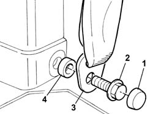
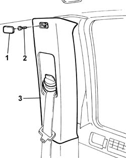

7040H42 REAR PILLAR TRIM - R R
- Path
- Procedures > 70 FITTINGS > 7040 BODY INTERIOR FITTINGS AND TRIM > 7040H ROOF PANEL LINING > 7040H42 REAR PILLAR TRIM - R R
- Kind
- repair procedure (removal / refitting; the operation number is the code)
- Applies to
- all engines; all production periods
- Interactive page
- https://sloeber94.github.io/elrnDB-fUlss/en/#/179007828
Applies to: all engines; all production periods
 Removing
Removing
 Refitting
Refitting1. Remove the cover.
2. Undo the retaining bolt.
3. Release the seat belt lower fastening.
4. Keep the spacer.

Applies to: all engines; all production periods
1. Remove the cover.
2. Undo the retaining bolt.
3. Release the rear pillar trim.
- Release the seat belt from the pillar trim.
- Remove the rear pillar trim.

Applies to: all engines; all production periods
Refitting
Removing- Position the seat belt in the special housing in the rear pillar trim.
- Place the rear pillar trim in position.
- Tighten the fixing bolt.
- Position the cover.
- Position the spacer.
- Position the seat belt lower fastening.
- Tighten the fixing bolt.
- Position the cover.
Topics that link to this page (17)
- 5010B47 SIDE AIR DUCT TO REAR SEAT(ONE), LH OR RH - R R
- 5010C60 LH OR RH REAR AIR OUTLET -ONE- R R
- 5505A66 FRONT, CENTRE OR REAR SUN ROOF (ONE) NODE (DIGITAL NETWORK CONTROL UNIT) - R.R.
- 5505A76 LEFT OR RIGHT SLIDING SIDE DOOR NODE (DIGITAL NETWORK CONTROL UNIT) - R.R.
- 5580H10 PARKING OBSTACLE DETECTION DEVICE ELECTRONIC CONTROL UNIT - R R
- 5580H12 PARKING OBSTACLE DETECTION DEVICE BUZZER - R R
- 5580P24 CONNECT CONTROL UNIT SUPPORT - R.R.
- 5570T61 MULTI-FUNCTION AERIAL - R R
- 5570T98 REAR SPEAKER - R R
- 7020D67 ROD FOR LEFT OR RIGHT MOTORIZED SLIDING SIDE DOOR OPENING/CLOSING DEVICE - ADJUSTMENT
- 7020N30 GEARED MOTOR FOR OPENING/CLOSING LEFT OR RIGHT (ONE) SLIDING SIDE DOOR - R.R.
- 7040B13 LOAD COMPARTMENT/LOAD PLATFORM RIGHT SIDE TRIM - R R
- 7040H10 ROOF PANEL LINING - R R
- 7040H16 ROOF PANEL LINING - R R
- 7040L18 PASSENGER COMPARTMENT FLOOR REAR CARPET - R R
- 7065B08 REAR SEAT BELT (ONE) WITH PRETENSIONER ON REEL, LEFT OR RIGHT - R.R.
- 7210E56 TAIL-GATE